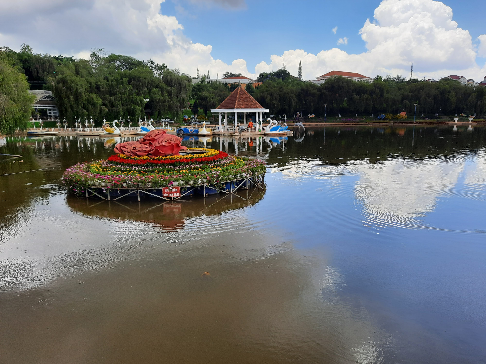

Go Back
Dalat

Dalat is a picturesque city about 8 hours North of HCMC. It's the capital city of Lam Dong province and is known for it's mountainous landscapes, forest, waterfalls and pleasant weather. It's a favourite travel destination for many locals and expats in Saigon and is a place I've been lucky to visit twice so far. There is plenty to do and see here and I will outline some of my favourite activities here in my guide.
Datanla Falls are probably the most well-known waterfalls in the area of Dalat. The falls themselves are very pretty but some of the key attractions of the waterfalls are the rollercoasters that take you up and down to and from the falls and the ziplining/ canopy walk activity. I didn't do the canopy walk however it did look very fun. I opted to take the rollercoaster up and down and thought it was a very cool experience. Normally when you are on a rollercoaster it's in a theme park surrounded by other rides but the rollercoaster here was down a mountain slope surrounded by trees. It also had a manual brake so you could control your speed and whether or not you wanted to stop. The bottom part of the trail near the falls is a very romantic setting and also features a little archery range. I recommend visiting Datanla falls and experiencing what it has to offer if you visit Dalat.
The Crazy House and 100 Roofs Bar are two buildings renowned for their unique architecture. They were both designed by the same architecture and feel like you are walking through an Alice in Wonderland inspired maze. The Crazy House is actually a hotel that you can visit and walk around during the day time and pay to stay at during the night in very unique rooms. I haven't stayed a night here but have enjoyed walking around the property during the day time. The 100 Roofs Bar is like the crazy house architecturally but as the name suggests is a bar. You can buy a beer or cocktail and get lost in the many levels and secret passages in this bar. Try not to get lost!
The Linh Phuoc Pagoda is one of the most memorable pagodas I've ever been to and is considered a special architectural mosaic of Dalat city. Located a bit outside the city itself this pagoda is colourful, beautiful and has a secret underground passage that is full of statues, sculptures and history. The 49-meter-long dragon temple is made of 12,000 bottles; the dragon's head is 7 metres high. There are many different beautifully carved wooden sculptures here depicting buddhas and other important religious figures. I highly recommend visiting this pagoda and exploring the different buildings and passages.
The Night Market in Dalat is great not only for food but also for buying souvenirs and clothing. Here you can find a variety of favourite street foods such as different barbecued meats, crepes, soups and drinks. Due to Dalat's colder climate they have lots of heavier clothing such as jackets, touques and scarves. The night market is always full of people eating and shopping around. There are street performers and it's just an all around fun experience like most night markets in Vietnam.
There are some really nice cafes that have great views of the lush mountains and valleys around the town. One such cafe is Dalat View Cafe. They have good coffee, decent Vietnamese breakfasts such as a banh mi (baguette) with scrambled egg and sausage and most importantly a very nice view. This particular cafe is South of the city and is a nice stop on the way to Datanla Falls for breakfast and coffee.
I've stayed in two different accomodations on my two trips to Dalat. On my first visit when I was younger I stayed at Mr. Peace Backpacker's House. This was a great hostel with an extremely friendly host and staff, comfortable beds, cheap communal dinners, and fun social nights and outings. It was a great place to meet other travellers and they help to arrange everything such as tours and transport. I'd highly recommend it if you're looking to stay in a hostel. If you prefer a hotel with a private room, we enjoyed our stay at Thanh Thanh Hotel. This hotel is very well situated just a 5 minute walk from the night market and plenty of restaurants and bars. It's close to many of the major attractions in the town such as the Crazy House, 100 Roofs Bar and night market. The rooms were clean and came with all the necessary ammenities. The staff was friendly and helpful.